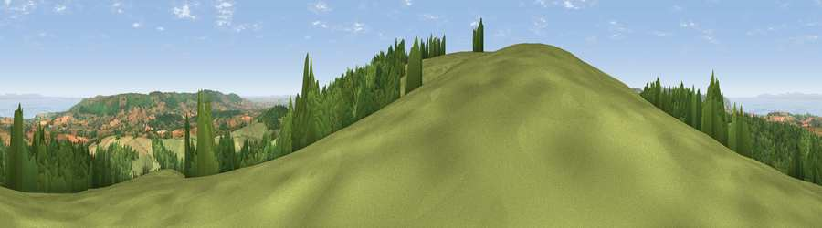

Viewpoint near Elworthy
#1176 in England · top 7% of its area beats it · near ElworthyThe view, rendered

A 360° render of this exact spot computed from the terrain model, tree cover and land cover — summer colours, afternoon light, calibrated against photographs of famous viewpoints. Real trees, hedges and buildings will differ in detail.
The panorama
Grey silhouette: terrain skyline in each direction (720 bearings, Earth curvature and refraction included). Dashed green: skyline with trees (+15 m) and buildings (+8 m) as obstacles. Blue strip: how far the ground is visible on each bearing.
Where the view opens
Wedge length = distance to the farthest visible ground on that bearing (vegetation-aware). Rings at 10, 25 and 50 km.
What fills the view
40% woodland · 37% grassland · 15% cropland · 6% water
Angular shares of the visible panorama (visual magnitude), not map area. Landscape diversity 0.53 (0–1 Shannon).
Key numbers
More beautiful places nearby
The staircase of upgrades: each row has a higher view potential than everything closer. Driving times are estimates from straight-line distance, calibrated against real road routing — check an actual route before setting out.
| Place | Direction | Drive | Score |
|---|---|---|---|
| Viewpoint near Roadwater | NW · 3 km | ~8 min | 83.6 |
| Viewpoint near Roadwater | NW · 4 km | ~9 min | 84.2 |
| Viewpoint near Roadwater | WNW · 7 km | ~14 min | 85.2 |
| Viewpoint near West Quantoxhead | NE · 8 km | ~16 min | 87.8 |
| Viewpoint near West Quantoxhead | NE · 8 km | ~16 min | 88.7 |
| Holdstone Hill | WNW · 47 km | ~67 min | 90.2 |
| The Knoll | SE · 66 km | ~89 min | 91.0 |
51.10853, -3.32893 · source: screening · position refined by local search. Computed location — check access rights before visiting.